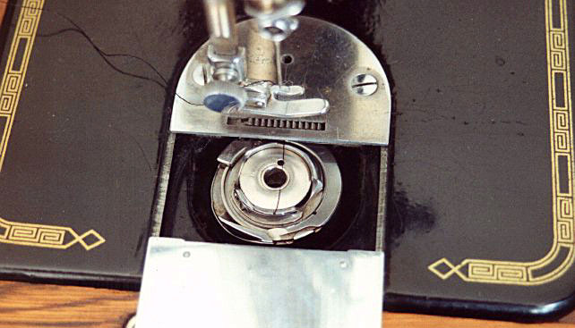

THE NEEDLEBAR
Shuttle Types
The Rotary Shuttle

The Rotary Shuttle as indicated by the name moves round and
round in a complete circular motion. The shuttle illustrated above is mounted
in a Singer 201K machine
© Alan Quinn 1998, 2004. All Rights
Reserved
This web page or any portion of it may
not be reproduced in any form without the prior written permission of the copyright
holder